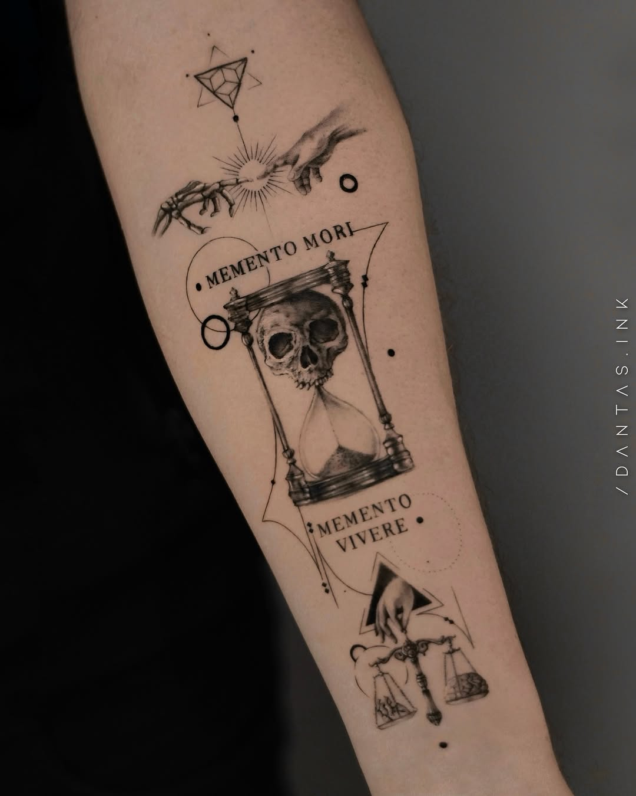

Entrar
Entrar Sair
Sair01
Descoberta
Responda ao questionário reflexivo para mapear seus valores e afinidades filosóficas.
Projeto acadêmico • filosofia aplicada ao autoconhecimento
Explore correntes filosóficas de forma prática: responda perguntas reflexivas, descubra tendências do seu pensamento e acompanhe sua jornada com mais clareza.
Registre aprendizados no Diário e observe sua evolução pessoal ao longo do tempo, em uma experiência educativa, íntima e orientada ao autoconhecimento.
01
Responda ao questionário reflexivo para mapear seus valores e afinidades filosóficas.
02
Entenda como suas respostas se conectam a uma corrente filosófica e aos seus principais pensadores.
03
Registre pensamentos, dilemas e aprendizados do dia a dia em um espaço privado de escrita.
04
Acompanhe sua evolução, consistência e padrões gerais de reflexão com privacidade.
Sou estudante da SPTech e desenvolvi este projeto acadêmico para transformar filosofia em prática de autoconhecimento. Em momentos difíceis, esse estudo foi uma base de resiliência para seguir com propósito.
A identidade visual nasce dos símbolos da tatuagem que inspira essa jornada: ampulheta (memento mori e memento vivere), balança (equilíbrio entre razão e emoção) e mãos (escolhas e responsabilidade).
 Razão e emoção
Razão e emoção

Este projeto foi construído com HTML, CSS, JavaScript Vanilla, Node.js, Express e MySQL no contexto acadêmico da SPTech.
A proposta dialoga com os Objetivos de Desenvolvimento Sustentável, com foco principal na ODS 3 e contribuição complementar da ODS 4.